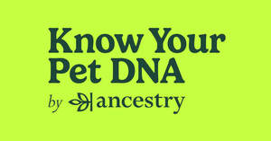
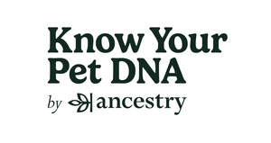

Trade Mark Journal No.2025/011 14 March 2025
UK00004169386 5 March 2025 (9,42)
Mark 1

Mark 2

- Class 9
- Kits for scientific and research purposes comprised primarily of a sample collection tube, a swab for collecting a genetic sample, and an instruction manual for use in DNA testing for dogs; DNA test kits for scientific and research use comprised of a sample collection apparatus for the testing and analysis of DNA and genetics in dogs; DNA collection kits for scientific and research use for the testing and analysis of DNA and genetics in dogs for the purposes of breed identification, ancestry determination, and trait identification.
- Class 42
- Providing scientific analysis in the field of genetics; reporting services based upon the results of laboratory testing in the field of genetics; DNA testing and DNA analysis services for non-medical use; providing a website featuring temporary use of non-downloadable software for providing results of DNA tests and genetic analyses in dogs for the purposes of breed identification, ancestry determination, and trait identification; providing scientific analysis and informational reports based upon results of laboratory testing in the field of canine genetics for the purposes of breed identification, ancestry determination, and trait identification; providing online computer databases featuring information based on the results of DNA testing and genetic analyses in dogs for research purposes; computer services, namely, hosting and maintaining an online website for others to access and share information and data in the field of pet genealogy; providing temporary use of non-downloadable software for use in creating, displaying, sharing and storing information and data in the field of pet genealogy; application service provider services featuring software allowing users to generate information and view analyses based upon results of canine genetic testing; providing an online resource center featuring information in the field of pet genealogy; providing pet genealogical information, namely, information services in the nature of retrieving, recording and reviewing pet breed identification, ancestral data, and physical traits via the internet.
Ancestry.com Operations Inc.
Representative: Keltie LLP